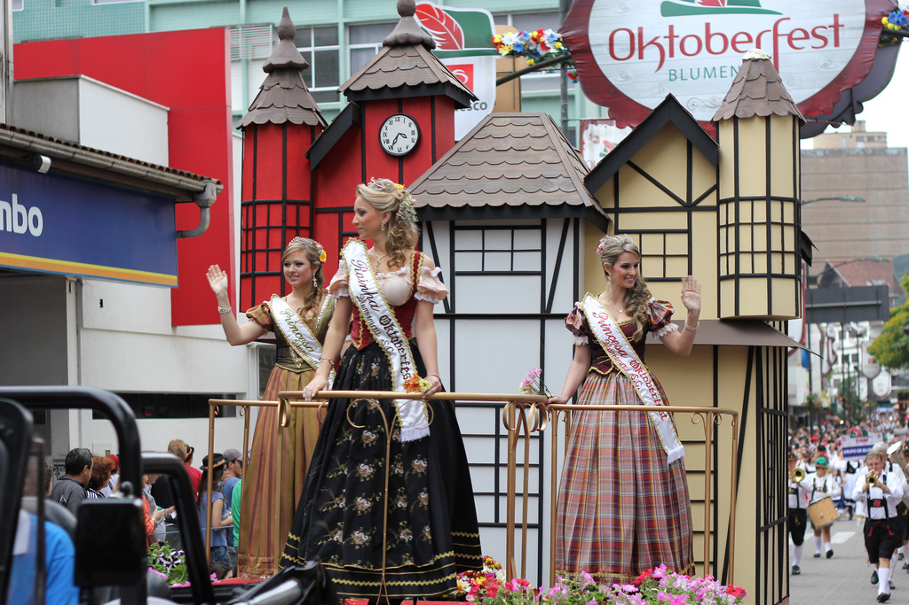
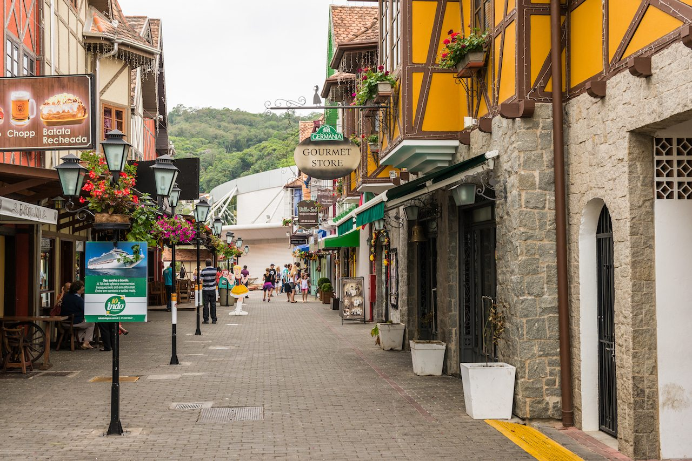
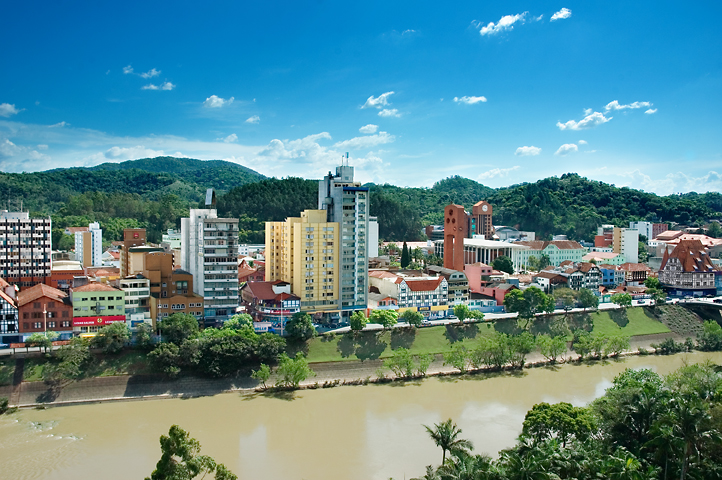
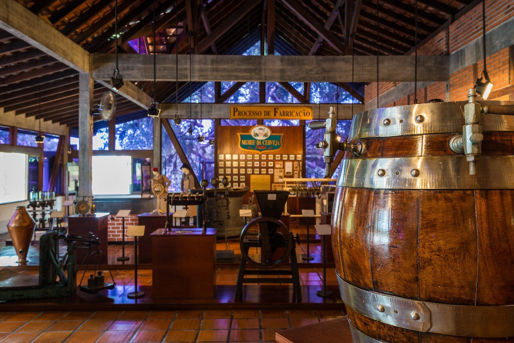

In the south of Brazil, find Germany in the town of Blumenau
Far from Germany, Blumenau is all Deutsch
In the southern Brazilian state of Santa Catarina is a city called Blumenau, which is as German as any city in Germany (and I know, I live in Germany!) From the cobblestone streets, to the post-and-beam architecture, and the bakeries on every corner, you wouldn’t know you are not in Germany if you just woke up here one day.
A buddy of mine, Leo, who I was visiting in Florianópolis, had a family apartment in Blumenau, so we decided to go spend a few days there. He and I met while we were both Rotary Youth Exchange students in Germany, so getting to experience the German culture together again was quite special.
This post was written with support from Embratur, which is part of the Brazilian Ministry of Tourism and which operates VisitBrasil.com. They have supplied me with images and marketing support. All views expressed are solely my own and based on my personal experiences and independent research.
In A Nutshell
Highlights - Beautiful architecture, rolling hills, immediate access to nature, riverfront access, local breweries, local vineyards, and lots of festivals and special events.
Lowlights - If you are visiting Brazil for a limited time, you might consider experiencing more “real” Brazilian destinations, rather than this Europeanized town.
Bottom line - The year-round temperate climate make Blumenau an ideal destination at anytime. As the Brazilian capital of beer and wine, along with many event facilities, you will always find something special going on in Blumenau.
| [caption id=”attachment_17912” align=”alignnone” width=”1024”] The Blumenau Oktoberfest | Photo by: Vitor Pamplona.[/caption] |
Party like a German in Brazil: Oktoberfest in Blumenau
The Blumenau Oktoberfest is the biggest Oktoberfest celebration in the world outside of Munich. It has been operating for only three decades, yet it draws people from all over the world to celebrate Bavarian-style in Blumenau. Despite all the similarities between the Oktoberfest celebrations in Germany and Blumenau, the one missing element, ironically, is German beer!
The +500,000 liters of beer consumed during the 2-week Blumenau Oktoberfest is primarily brewed by local craft beer brewer, Eisenbahn. Eisenbahn does brew to the strict German Purity Law, proclaimed by Duke William IV of Bavaria in 1516, which states that a beverage can only be called “beer” when it is made from 3 ingredients: water, barley and hops.
All in all, the Blumenau Oktoberfest is both in a class of its own, and as near to a mirror-image as you can find of the Munich Oktoberfest. If you are planning a trip to Brazil in October, be sure to make time to get down south and give Blumenau a twirl!
[caption id=”attachment_12752” align=”alignnone” width=”1024”] Blumenau, Santa Catarina, Brazil, Street Scene. Courtesy Embratur Image Bank.[/caption]
Blumenau: A city split by a river
Blumenau is divided in two by the Itajaí-Açu River. The city center runs along the waterfront, which is vibrant with life, walking trails, and beautiful views. Most people live outside of the downtown area, up on the nearby hillsides. The Itajaí-Açu River has a bad history of catastrophic flooding, and though there are more modern systems in place today to tame the river, the terrible floods of the early 1980s are too fresh in peoples’ minds, so they stick to higher ground.
On most days, though, the riverfront is a great place to walk, have a drink, and enjoy the view and fresh mountain air. The hilly region around Blumenau is also ideal for vineyards, and thusly there are many. Pinot Noir is the wine of choice in Blumenau, so get a glass, find a place to relax, and enjoy life in Blumenau!
[caption id=”attachment_17906” align=”alignnone” width=”722”] By Marlon Hammes de Blumenau, Brasil. - Blumenau, CC BY 2.0, Link[/caption]
Even with more than 300,000 inhabitants, Blumenau feels like a pretty small town. While visiting here, you will find many modern amenities and great shopping. The standard of living is among the highest in all of Brazil, so all the comforts of life will be available to you as a visitor.
So take a walk, take a breather, enjoy a glass of wine or beer fresh from Blumenau, and enjoy the city’s interesting streets, architecture, and numerous statues which hail from the city founders’ European heritage.
[caption id=”attachment_12751” align=”alignnone” width=”1024”] Blumenau, Santa Catarina, Brazil, Golden Statue. Courtesy Embratur Image Bank.[/caption]
Learn about what you are drinking
The Blumenau Museu da Cerveja is all about beer. With all of the German influence in Blumenau and the multitude of local craft beer breweries, this makes the Museu da Cerveja a prime place to learn about the beer brewing process. The museum is quite small and you can honestly get through the whole thing in under half an hour.
The Museu da Cerveja will walk you through the entire history of beer from prehistoric times up until today. You will of course learn about how beer is brewed and you will have an opportunity to get answers to any questions you may have about the general process, the local beer culture, or just what is going on in town tonight.
Pro Tip: The museum is free and the bathrooms are really clean.
[caption id=”attachment_12750” align=”alignnone” width=”1024”] Blumenau, Santa Catarina, Brazil, Museu da Cerveja. Courtesy Embratur Image Bank.[/caption]
For more information about Blumenau
For more information about Blumenau and the surrounding destinations in Santa Catarina state, read this page on VisitBrasil.com.
Please leave a comment bellow with your thoughts on this post or to share any experiences you have had in Blumenau. You may also reach me directly on Twitter at @judsonlmoore.